RECORDED RUNS / THREE UNSEEN DATASETS / TWO SYSTEMS
Does the system work beyond the tasks used to build it? Give both systems the same fresh data and a concrete goal, compute references separately, and inspect the actual outputs. No model runs when you open this page.

Pick a task
Wine quality · prediction
Predict a sensory score from eleven laboratory measurements. The checker keeps 980 wines hidden and measures mean absolute error. Lower is better.
Read the goal and both results ↓Student grades · analysis
Read a semicolon-separated table. Report student count and final-grade means grouped by prior failures and study time. Compare the returned JSON with the reference.
Read the goal and both answers ↓Household power · time series
Find December 2008 inside two million minute readings. Parse day-first dates and missing-value markers, then calculate daily means and the peak day.
Read the goal and both answers ↓The comparison, without hiding the cost
| Task | System | Passed | Model calls | Seconds | Shadow $ |
|---|---|---|---|---|---|
| wine-quality | Team · no memory | yes | 16 | 207.3 | 0.00492 |
| wine-quality | Single agent | yes | 2 | 90.2 | 0.00131 |
| student-grades | Team · no memory | yes | 9 | 99.6 | 0.00268 |
| student-grades | Single agent | yes | 1 | 26.3 | 0.00045 |
| household-power | Team · no memory | yes | 9 | 310.9 | 0.00251 |
| household-power | Single agent | yes | 1 | 136.8 | 0.00049 |
Both systems returned a correct result for each task. The team used more model calls every time. This is a transfer sanity check with separate reference calculations, not a rerun of the controlled benchmark or evidence that all future uploads will pass.
Sources: run summary, reference answers, report builder. The report below preserves the recorded goals, outputs and marked excerpts.
The benchmark tasks were built for this system: the traps were planted on purpose and the thresholds were set from reference solutions. A field test asks a different question. Three public datasets that are not in the benchmark, a goal written the way someone would actually ask for it, and an answer computed here in pandas and never shown to the agents. Both systems ran once on each, on the same data, with the same budget. 6 of 6 runs got it right.
| task | what was asked | the team | the single-agent baseline |
|---|---|---|---|
wine-quality |
a model, scored by mae on 980 held-back rows | passed - 16 model calls, 0.0049 shadow $, 207 s | passed - 2 model calls, 0.0013 shadow $, 90 s |
student-grades |
a number per group, checked against pandas | passed - 9 model calls, 0.0027 shadow $, 100 s | passed - 1 model call, 0.0004 shadow $, 26 s |
household-power |
a number per group, checked against pandas | passed - 9 model calls, 0.0025 shadow $, 311 s | passed - 1 model call, 0.0005 shadow $, 137 s |
The three tasks
wine-quality
UCI Wine Quality (white), 4,898 wines. A prediction task on a dataset with no traps at all: eleven clean numeric measurements and a score. The point is what the systems do when nothing is hidden.
The goal, as the agents received it:
A winery wants to score the quality of a white wine from its laboratory measurements, before the tasting panel sees it.
data/wine.csvholds measurements and the panel's score for wines that have already been tasted. Build a model that predictsqualityfor new wines; it will be judged by mean absolute error on wines held back from you.
Measured on this exact split before any agent ran: always predicting the mean gives MAE 0.658, a linear regression 0.575, a random forest 0.424. The run had to reach 0.5 to pass, so a delivered model has to beat a one-line regression.
- The team: mae 0.4485 over 980 held-back wines
- The baseline: mae 0.4467 over 980 held-back wines
Both reached for a random forest and both landed just under the threshold: better than a linear regression (0.575) and short of the reference forest (0.424). Neither tuned anything, and neither compared its model with a simpler one.
student-grades
UCI Student Performance (mathematics), 395 students. An analytical task on a small file that is semicolon-separated with quoted text, where the interesting part is reading the file correctly and grouping by two coded columns.
The goal, as the agents received it:
Using
data/students.csv(seedata/README.md), describe how the final grade relates to past failures and to time spent studying.
output/answer.jsonmust be an object with three keys: -"students": the number of students in the file; -"mean_final_grade_by_failures": an object mapping the number of past class failures ("0", "1", "2", "3") to the mean ofG3for those students; -"mean_final_grade_by_studytime": an object mapping the study-time code ("1", "2", "3", "4") to the mean ofG3for those students.
The reference answer, computed in pandas by pipeline_agents.bench.field and never shown to the agents (every number must match within 0.1% of itself):
{
"students": 395,
"mean_final_grade_by_failures": {
"0": 11.253205128205128,
"1": 8.12,
"2": 6.235294117647059,
"3": 5.6875
},
"mean_final_grade_by_studytime": {
"1": 10.047619047619047,
"2": 10.171717171717171,
"3": 11.4,
"4": 11.25925925925926
}
}
...
- The team: every number matches the reference
- The baseline: every number matches the reference
Both parsed the file and matched all nine numbers. The baseline did it in a single model call.
household-power
UCI Individual Household Electric Power Consumption, 2,075,259 minutes. The hardest of the three for a machine: 2,075,259 rows, readings written as ?, dates as DD/MM/YYYY, and a question about one month inside four years of minutes.
The goal, as the agents received it:
Using
data/power.csv(seedata/README.md), summarise household electricity use in December 2008.
output/answer.jsonmust be an object with three keys: -"missing_minutes": the number of minutes in December 2008 whose active power reading is missing; -"daily_mean_active_power": an object mapping each date of December 2008 as "YYYY-MM-DD" to the mean ofGlobal_active_powerover that day's valid readings, in kilowatts; -"peak_day": the date with the highest mean.
The reference answer, computed in pandas by pipeline_agents.bench.field and never shown to the agents (every number must match within 0.1% of itself):
{
"missing_minutes": 71,
"daily_mean_active_power": {
"2008-12-01": 1.1225958333333332,
"2008-12-02": 1.2454472222222222,
"2008-12-03": 1.218863888888889,
"2008-12-04": 1.2073874999999998,
"2008-12-05": 1.4295958333333334,
"2008-12-06": 1.7526638888888888,
"2008-12-07": 1.7130138888888888,
"2008-12-08": 1.297663888888889,
"2008-12-09": 1.3910722222222223,
"2008-12-10": 1.540890510948905,
"2008-12-11": 0.9948069444444444,
"2008-12-12": 1.2607875,
"2008-12-13": 1.2677597222222223,
"2008-12-14": 1.390361111111111,
"2008-12-15": 1.2468402777777778,
"2008-12-16": 1.2479791666666666,
"2008-12-17": 1.4574902777777778,
"2008-12-18": 1.2062083333333333,
"2008-12-19": 1.3070222222222223,
"2008-12-20": 1.5583752605976373,
"2008-12-21": 1.8358402777777778,
"2008-12-22": 1.3998666666666666,
"2008-12-23": 1.2486722222222222,
"2008-12-24": 0.88169305555
...
- The team: every number matches the reference
- The baseline: every number matches the reference
Both read the file with na_values='?' and an explicit format='%d/%m/%Y', so neither lost a day to a misparsed date, and both matched the count of missing minutes, all 31 daily means and the peak day. It is worth putting next to T11, where runs died on the 4 GB sandbox limit: the limit is not a problem for two million rows read sensibly, it was a problem for a dense one-hot matrix of a hundred thousand.
What this says
- On unseen data with a clear goal, both systems work. Six runs, six right answers, including a two-million-row file and a model that had to beat a linear regression.
- The team's machinery bought nothing here. Same answers as the single model, for 4 to 9 times the model calls and 2 to 3 times the wall clock. That is the same finding as
docs/ablations.md, on data neither system was tuned for. - This is why the benchmark has traps. These three tasks have no planted pitfalls, and everything passed. The differences between systems only appear where a dataset punishes a plausible mistake.
What it does not say
- One run per system per task, and three tasks. This is a sanity check on unseen data, not a measurement; the measured comparison is
docs/ablations.md. - I wrote these goals, so they are clear and they ask for things the data can answer. A goal that is vague, or asks for something the data cannot support, is a different test.
- The references are my own pandas code. They are unit-tested on small frames, and the agents' answers matching them to the last digit is evidence for both.